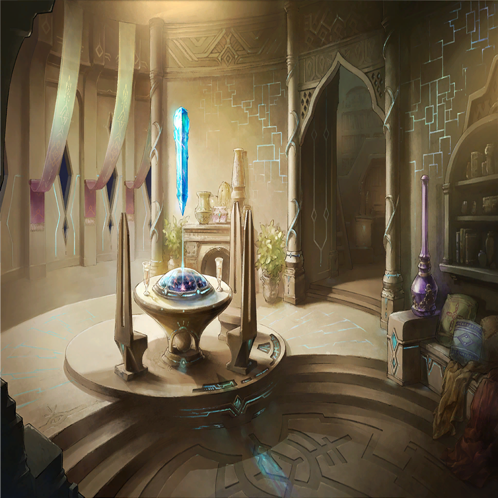

|
 |
|  |

ビアンカ |
――戻ってくるなり監禁とか、
ちょっとひどくないかな？ |
| クベラ |
蛇竜の巫女…
我らに新たな道を示せし巫女よ |
| クベラ |
マンモン討伐の儀の為、
ク・ロウが貴様を探している |
ビアンカ |
あら、ク・ロウ様が？
そっか、それであなたが直々に、
私を迎えに来たというわけ |
ビアンカ |
この罪域を統べる者―― |
ビアンカ |
強欲罪域＜アヴァリティア・ベルト＞の
あらゆる武と力の象徴、
武神クベラ様？ |
| クベラ |
無用な韜晦（とうかい）も、
無駄なへりくだりも不要だ |
| クベラ |
我らはただ“強さ”を目指す
最強へ至る道こそが、
強欲の民たる我らの目的 |
| クベラ |
貴様はその為の知恵を授けると言った
そうだろう？ “誘惑の蛇”よ |
ビアンカ |
…それは私のコトじゃないのだけれど |
ビアンカ |
でも約束だものね
いいわ、教えてあげる |
ビアンカ |
かつて、世界の理を捻じ曲げる為に
生み出された兵器――
“竜”の力を、奪う方法を… |
|
|
| イエナ |
――ッ!? |
| イエナ |
ここ、は… |
| イエナ |
（この部屋の配置、独特の匂いは――
そんな、まさか…！） |
| ？？？ |
兄さん？
もう、いつまで寝てるんですかー？ |
| イエナ |
…ッ！ |
| ？？？ |
あ、やっと起きてきましたね
いくら昨日は徹夜だったからって、
お昼まで寝ているなんて―― |
| イエナ |
ベニカ――!! |
| ベニカ |
わ、わ…！
どうしたんですか、兄さん |
| ベニカ |
怖い夢でも見たんですか？
兄さんは本当に弱虫ですねっ！ |
| イエナ |
…ああ、そうかもしれない |
| ベニカ |
…？
本当に大丈夫ですか？ いつもなら… |
| ベニカ |
『この罪域にお前より
弱い人間はいないぞ、ベニカ』って
言い返してくるのに |
| イエナ |
それは…その…
一種の冗談というかだな |
| ベニカ |
わかってますよ、兄さん
兄さんは別にヒトの強さとか
気にしないし… |
| ベニカ |
私が弱いのは、本当のことですから！ |
| イエナ |
…威張ることではないな？ |
| ベニカ |
えへへ… |
| イエナ |
無理はするなよ。お前は… |
| ベニカ |
わかってる
でもね、今日は穢れの痛みも少ないの
だから平気 |
| イエナ |
………… |
| イエナ |
（ここは、間違いない…強欲罪域
＜アヴァリティア・ベルト＞だ
それに俺のこの姿…若返っている？） |
| イエナ |
（だとすれば、
俺は過去に飛ばされたのか？
そしてかつての自分と合一を…？） |
| イエナ |
（わからん…
ニムルであれば、この程度の情報でも
なんらかの推論を立てるんだろうが…） |
| ベニカ |
ほら、ルークも
ご飯ですよ～？ |
| ルーク |
きゃぁ、きゃぁ！ |
| イエナ |
…ベニカ、その動物は？ |
| ベニカ |
あ、その…実は、拾ったんです
兄さんのお師匠様の工房のある…えっと |
| イエナ |
“名もなき島”でか |
| ベニカ |
そう、そうです！
怪我をしていたから手当てを
してあげたんですけど、懐かれちゃって |
| イエナ |
…ちゃんと面倒は見れるのか？ |
| ベニカ |
はいっ！ ちゃんとします！ |
| イエナ |
そうか… |
| イエナ |
（ベニカがあの動物…
ルークを飼い始めるのは
この罪域が滅ぶひと月前…） |
| イエナ |
（だとすれば、時間がない
だが…だが、俺は…） |
 |
| クェンス |
お前もそういうの、興味あるよなあ？
イエナ
死んだ妹に、もう一度会いたいだろう？ |

ク・イエナ |
…っ |
|
| イエナ |
（俺は、一体どうすれば…） |
| ベニカ |
そういえば、兄さん
今日もお師匠様の工房に？ |
| イエナ |
あ、ああ。そのつもりだ |
| ベニカ |
あの、憶えてますか？
今日は―― |
| イエナ |
（そうか、今日は――） |
| イエナ |
（…大丈夫だったはずだ
きちんと家に帰った記憶がある） |
| イエナ |
お前の誕生日だろう？
大丈夫、暗くなる前には帰る |
| ベニカ |
本当に…!? |
| イエナ |
贈り物も用意している
楽しみに待っているといい |
| ベニカ |
絶対ですよ…っ |
| イエナ |
ああ。それじゃあ行ってくる |
| ベニカ |
行ってらっしゃい、兄さん |
|
| イエナ |
…記憶のままだ |
| イエナ |
俺の、故郷… |
| 強欲の戦士 |
これはイエナ殿
今から工房に行かれるのか？ |
| イエナ |
ああ、師匠に呼ばれている |
| 強欲の戦士 |
あの人嫌いのク・ロウ様が
わざわざ呼びつけるとは… |
| 強欲の戦士 |
よほど気に入られているようだな
…いずれ貴殿も、良き錬鉄師になるだろう |
| イエナ |
だと、いいが… |
| 強欲の戦士 |
どうか、強い武器を造ってくれ
我らはその日を心待ちにしている |
| イエナ |
ああ… |
| イエナ |
過去なのだから当然だが、
変わらないな…彼らは |
| イエナ |
強欲の戦士
ただひたすらに強さを求め己を鍛え続ける
七つの罪域で最も欲深き者たち… |
| イエナ |
彼らの歩む先が、
あの破滅だというのなら俺は… |
| イエナ |
俺は、どうすればいい？ |
| イエナ |
…今は、結論は出すまい
考える時間はまだある |
| イエナ |
まずは…師匠の工房に行かなくては |
 |
| 堕罪者 |
オォォォォ… |
| イエナ |
…参ったな
師匠の工房まではあと少しなんだが |
| イエナ |
（この頃の俺は、
今よりも戦いに疎かった…
どこまでやれるかわからんが――） |
| イエナ |
黙って“殺される”つもりはない
道を空けてもらうぞ…！ |